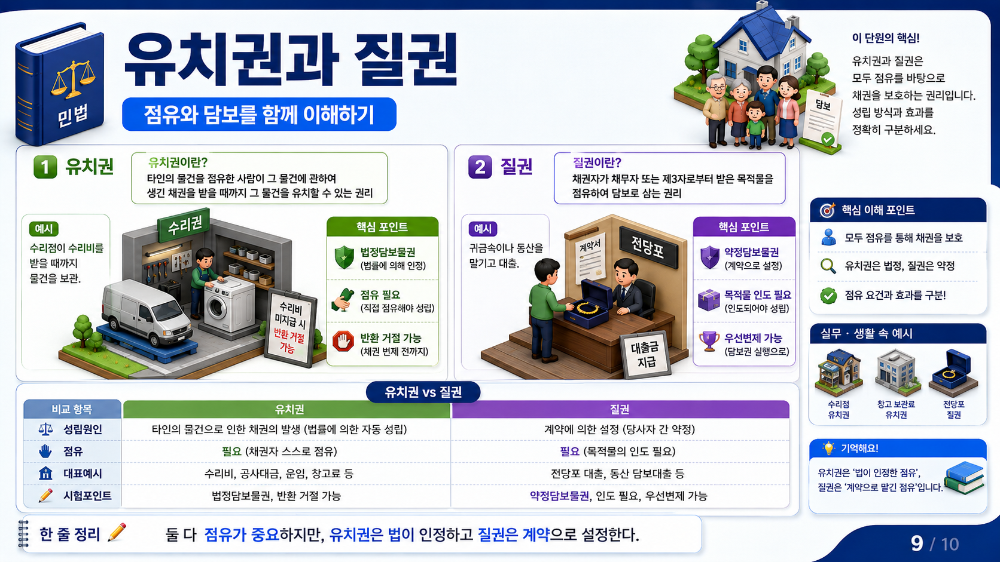
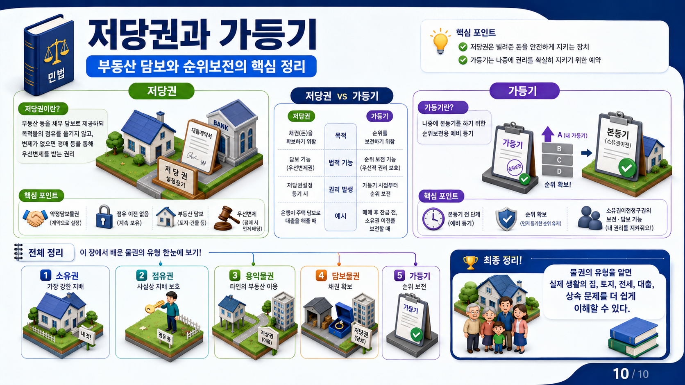

상위 단원
이 페이지는 물권법 단원에 포함됩니다. 강의목차에서 같은 묶음의 앞뒤 주제를 함께 확인하세요.
1. 담보물권의 기본 구조
담보물권은 채권자가 채무자의 채무 이행을 확보하기 위해 물건의 교환가치를 지배하는 권리입니다. 채무자가 돈을 갚지 않으면 목적물을 붙잡아 두거나, 팔아서 생긴 금액에서 변제를 받는 방식으로 작동합니다.
유치권, 질권, 저당권은 모두 채권 담보라는 목적을 가지지만 성립 원인과 공시방법이 다릅니다. 유치권은 법률상 요건을 갖추면 성립하는 법정담보물권이고, 질권과 저당권은 당사자 약정에 의해 설정되는 약정담보물권입니다.
| 권리 | 성립 핵심 | 공시ㆍ지배 | 시험 포인트 |
|---|---|---|---|
| 유치권 | 견련성 있는 채권과 적법한 점유 | 점유 | 법정담보물권, 반환거절권 중심 |
| 질권 | 질권설정계약과 목적물 인도 | 점유 이전 | 동산질권에서 점유개정 불가 |
| 저당권 | 저당권설정계약과 등기 | 등기 | 점유 이전 없음, 우선변제 |
2. 유치권과 질권: 점유를 바탕으로 채권을 보호하는 담보물권
유치권은 타인의 물건 또는 유가증권을 점유한 사람이 그 물건에 관하여 생긴 채권을 변제받을 때까지 목적물 반환을 거절할 수 있는 법정담보물권입니다. 대표 예는 수리비를 받지 못한 수리업자가 수리한 물건을 돌려주지 않고 보관하는 경우입니다.
질권은 채무자 또는 제3자가 제공한 동산이나 재산권을 채권자가 인도받아 점유함으로써 채권을 담보하는 약정담보물권입니다. 귀금속을 맡기고 돈을 빌리는 전당포 사례가 이해하기 쉽습니다.
둘 다 점유가 중요하지만 성립 방식이 다릅니다. 유치권은 법이 정한 요건을 충족하면 성립하고, 질권은 당사자 간 질권설정계약과 목적물 인도가 중심입니다.

| 구분 | 유치권 | 질권 |
|---|---|---|
| 성립원인 | 법률상 요건 충족으로 성립하는 법정담보물권 | 질권설정계약과 목적물 인도로 성립하는 약정담보물권 |
| 점유 필요 | 채권자가 목적물을 적법하게 점유해야 함 | 채권자가 목적물을 인도받아 점유해야 함 |
| 목적물 | 타인의 물건 또는 유가증권 | 동산 또는 재산권 |
| 대표 예시 | 수리비를 받기 전까지 수리 물건을 보관 | 귀금속을 맡기고 돈을 빌림 |
| 효과 | 반환거절로 변제를 간접 강제 | 담보물 환가대금에서 우선변제 가능 |
3. 질권
질권은 채무자 또는 제3자가 제공한 동산이나 재산권을 채권자가 점유하여 채무 이행을 담보하는 약정담보물권입니다. 부동산은 질권이 아니라 저당권의 대상이 되는 것이 원칙입니다.
질권은 목적물 인도가 핵심입니다. 채권자가 담보물을 실제로 지배해야 하므로, 동산질권에서는 점유를 넘기지 않는 방식으로 질권을 성립시킬 수 없다는 점이 시험에서 중요합니다.
| 항목 | 내용 | 시험상 함정 |
|---|---|---|
| 성립 | 질권설정계약과 목적물 인도 | 계약만 있고 인도가 없으면 부족 |
| 목적물 | 동산과 재산권 | 부동산 질권이라는 표현 주의 |
| 효력 | 유치적 효력과 우선변제 | 유치권과 성립 원인을 혼동하지 않기 |
| 제3자 제공 | 물상보증인이 담보 제공 가능 | 채무자 소유물만 가능하다고 단정하면 오답 |
4. 저당권과 가등기: 부동산 담보와 순위보전
저당권은 채무자 또는 제3자가 제공한 부동산 등을 채권자에게 넘기지 않고도 담보로 삼는 약정담보물권입니다. 채무자는 목적물을 계속 사용ㆍ수익할 수 있고, 채권자는 등기를 통해 담보권을 확보합니다.
저당권의 핵심은 점유 이전이 아니라 등기입니다. 채무불이행이 있으면 저당권자는 목적물의 경매대금에서 다른 일반채권자보다 우선하여 변제를 받을 수 있습니다.
가등기는 장래 본등기의 순위를 보전하기 위한 예비등기입니다. 담보 목적으로 이용되는 경우 저당권과 비슷하게 채권 확보 기능을 하지만, 가등기 자체를 독자적인 물권으로 보지는 않습니다.

| 구분 | 저당권 | 가등기 |
|---|---|---|
| 목적 | 채권 변제를 확보하기 위한 부동산 담보 | 장래 본등기의 순위 보전 또는 담보 기능 |
| 공시 | 저당권설정등기 | 가등기 |
| 권리 발생 | 설정계약과 등기로 담보물권 성립 | 본등기 전에는 순위보전 또는 담보적 기능 중심 |
| 대표 예시 | 은행이 주택을 담보로 대출 | 매매예약 후 소유권이전청구권가등기 |
| 시험 포인트 | 점유 이전 없이 등기로 우선변제 | 독자적 물권이 아니라 본등기 순위보전 또는 담보 기능 |
5. 가등기
가등기는 장래 본등기의 순위를 보전하기 위해 미리 해 두는 예비등기입니다. 본등기에 필요한 요건이 아직 모두 갖추어지지 않았거나, 장래 권리변동을 예정하고 있을 때 활용됩니다.
첨부 자료에는 담보가등기와 소유권이전청구권가등기가 함께 설명되어 있습니다. 가등기는 독자적인 물권이라기보다 순위보전 또는 담보 기능을 하는 등기제도로 이해해야 합니다.
| 구분 | 목적 | 시험 포인트 |
|---|---|---|
| 소유권이전청구권가등기 | 장래 소유권이전 본등기의 순위 보전 | 매매예약, 조건부ㆍ기한부 청구권과 연결 |
| 담보가등기 | 채권 담보를 위한 가등기 | 가등기담보법, 근저당권과 유사한 담보 기능 |
| 본등기 전환 | 가등기 순위에 따라 본등기 순위 보전 | 가등기 이후 권리와의 우선관계가 쟁점 |
6. 보상관리사 시험에서의 비교법
담보물권 문제는 ‘무엇을 담보로 잡았는가’, ‘누가 점유하는가’, ‘등기가 필요한가’, ‘우선변제를 받을 수 있는가’를 순서대로 보면 빠르게 정리됩니다.
보상 실무에서는 저당권자, 전세권자, 가등기권자 등 담보 또는 담보적 권리를 가진 사람이 보상금 지급과 배당에서 이해관계를 가질 수 있습니다. 따라서 소유권자만 확인하지 말고 등기부상 제한권리도 함께 확인해야 합니다.
| 판단 질문 | 유치권 | 질권 | 저당권 | 가등기 |
|---|---|---|---|---|
| 계약으로 설정? | 아니오, 법정담보물권 | 예 | 예 | 등기 원인에 따라 다름 |
| 점유 이전? | 유치권자가 점유 | 질권자가 점유 | 점유 이전 없음 | 점유와 직접 연결 아님 |
| 등기 필요? | 아니오 | 원칙적으로 점유 | 예 | 예 |
| 핵심 기능 | 반환거절 | 유치와 우선변제 | 우선변제 | 순위보전 또는 담보 |
상세 강의 해설
제6장 담보물권은 민법강의에서 독립적으로 외울 항목이 아니라, 사례를 읽는 순서와 판단 기준을 함께 익혀야 하는 주제입니다. 이 단원은 제1장 물권법 서론, 제2장 물권변동, 제3장 점유권 등 같은 하위 주제로 이어지므로, 큰 제목을 먼저 잡고 세부 주제를 내려가며 읽는 것이 좋습니다.
먼저 담보물권은 채권의 변제를 확보하기 위한 물권입니다. / 유치권은 점유와 견련성이 핵심인 법정담보물권입니다. / 질권은 동산 또는 재산권을 넘겨 담보로 삼는 약정담보물권입니다.를 한 묶음으로 잡으세요. 그런 다음 사례에서 사실관계를 읽고, 어느 요건이 충족되었는지 표시하면 긴 선택지도 짧은 판단 문제로 바뀝니다.
민법 단원은 먼저 권리의 주체와 객체를 찾고, 그다음 권리가 발생했는지, 변경됐는지, 소멸했는지를 나누어 읽습니다. 특히 부동산 보상 사례에서는 등기부, 점유 상태, 계약관계, 상속관계가 서로 맞물리므로 하나의 사례 안에서 여러 권리가 동시에 움직일 수 있습니다.
기출형 선택지에서는 유치권, 질권, 저당권의 성립요건을 비교합니다. / 질권과 저당권은 목적물 점유 이전 여부로 구분합니다.처럼 주체, 요건, 효과 중 하나만 바꾸는 방식이 자주 쓰입니다. 따라서 정답을 고른 뒤에도 틀린 선택지가 왜 틀렸는지 한 줄로 적어 두는 것이 좋습니다.
공부할 때는 조문 문구를 바로 암기하기보다 ‘누가 누구에게 무엇을 주장할 수 있는가’라는 질문으로 바꾸어 보세요. 이 질문이 잡히면 물권과 채권의 차이, 무효와 취소의 차이, 상속과 등기의 연결이 훨씬 선명해집니다.
핵심 개념
- 담보물권은 채권의 변제를 확보하기 위한 물권입니다.
- 유치권은 점유와 견련성이 핵심인 법정담보물권입니다.
- 질권은 동산 또는 재산권을 넘겨 담보로 삼는 약정담보물권입니다.
- 저당권은 부동산을 넘기지 않고 등기로 담보를 설정합니다.
- 가등기는 독자적 물권이 아니라 본등기 순위보전 또는 담보 기능을 하는 등기제도입니다.
시험 포인트
- 유치권, 질권, 저당권의 성립요건을 비교합니다.
- 질권과 저당권은 목적물 점유 이전 여부로 구분합니다.
- 유치권은 반환거절권 중심이고 저당권 같은 등기담보와 다릅니다.
- 가등기는 소유권이전청구권가등기와 담보가등기를 구분합니다.
- 보상금이 지급될 때 담보권자의 우선변제나 물상대위 문제가 연결될 수 있습니다.
복습 질문
- 제6장 담보물권에서 가장 먼저 확인해야 할 기준은 무엇인가요?
- 이 단원이 민법강의의 다른 단원과 연결되는 지점은 어디인가요?
- 기출 선택지에서 주체, 요건, 효과 중 무엇을 바꾸면 오답이 되나요?
Check Point
이해 확인 문제
이 단원에서 헷갈리기 쉬운 개념만 골라 사례형 문제로 확인합니다.
예시 1. 유치권, 질권, 저당권의 구분으로 가장 적절한 것은?
- 유치권은 등기로만 성립한다.
- 질권은 목적물 인도가 중요한 약정담보물권이다.
- 저당권은 채권자가 반드시 목적물을 점유해야 한다.
- 세 권리는 모두 동일한 성립요건을 가진다.
질권은 질권설정계약과 목적물 인도가 중요합니다. 유치권은 법정담보물권, 저당권은 점유 이전 없이 등기로 담보를 설정하는 권리입니다.
예시 2. 은행이 주택을 담보로 대출해 주면서 채무자가 계속 그 주택에 살도록 한 경우, 가장 가까운 담보물권은?
- 유치권
- 질권
- 저당권
- 지역권
저당권은 목적물을 채권자에게 넘기지 않고 등기로 담보를 설정합니다. 채무자는 목적물을 계속 사용하면서도 채권자는 교환가치를 담보로 확보합니다.
연결 학습
이 단원을 읽은 뒤에는 문제풀이 페이지에서 같은 과목을 선택해 5문항 이상 풀어 보세요. 정답보다 중요한 것은 선택지마다 근거를 붙이는 연습입니다.